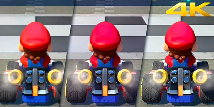
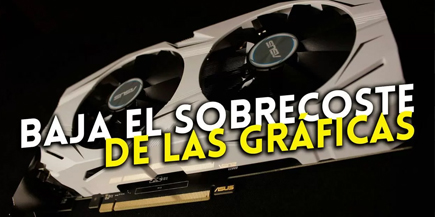

Comparativa PS5 vs XBOX
La PS5, un gran acierto trás un año desde su salida
La apuesta next-gen de Sony es una consola potente, con un futuro prometedor y en la que hay espacio para la innovación a través de un nuevo mando que se presenta como la joya de la corona.
Según Sony, si había algo que pedían especialmente los desarrolladores, era un SSD. La nueva generación de consolas se caracterizará por la extremada rapidez a la hora de cargar partidas y cargar texturas, pero en PS5 todo parece que llegará a un nivel nunca antes visto. Para ello han diseñado una unidad completamente a medida que ofrece 825 GB de capacidad y es capaz de alcanzar una velocidad de nada menos que 5,5 GB/s.
La nueva PS5 se encuentra disponible en dos versiones, una con lector de Blu-ray disponible por 499,99 euros, y una edición digital sin lector de discos por 399,99 euros. Este es, por descontado, el precio oficial que marca Sony, pero poco a poco es de esperar que vayan surgiendo promociones y packs.
La Xbox Series X tampoco se queda atrás
La nueva Xbox Series X es la consola estrella con la que Microsoft dará el salto a la nueva generación, acompañada por Xbox Series S y luchando frente a PS5. En este artículo te queremos ofrecer todo lo que sabemos hasta ahora sobre ella.
La nueva Xbox Series X estará disponible por 499,99 euros. Ese es su precio oficial, pero ya hay disponibles distintos packs con juegos como el que incluye el juego Cyberpunk 2077 por 549,95 euros y otro con Assassin's Creed: Valhalla por 549,95 euros.
Tal y como comentábamos unas líneas más arriba, Xbox Series X llegará en dos versiones, una digital y otra con lector de discos, que por lo demás mantendrán idénticas configuraciones de almacenamiento con un disco SSD de 825 GB.
Últimas Noticias
Así se ve Switch a 4K gracias a estos dispositivos de reescalado: ¿Cuál es mejor?
A principios de abril os hablábamos de 4K Gamer Pro , un dispositivo de terceros diseñado específicamente para Nintendo Switch con la intención de reescalar la resolución de los videojuegos de la híbrida para poder reproducirlos a 4K conectada a la televisión, una características que muchos pensaban que podría venir incorporada de manera oficial en el modelo OLED que se puso a la venta en octubre, pero que finalmente no está disponible pese a que el dock sí parece venir preparado para ello.
El sobrecoste de las gráficas cae al 19 % en modelos NVIDIA y hasta el 12 % en los de AMD
El mercado de las tarjetas gráficas sigue ajustándose y recuperando la normalidad, con un sobrecoste que sigue cayendo y que ya está por debajo del 20 % en las marcas más importantes.
Entre todas las malas noticias que estamos teniendo a nivel económico y de escasez de chips o suministros que están lastrando de una u otra forma el mundo de los videojuegos parece que tenemos una buena noticia que daros, que no es otra que la de que el sobrecoste de las tarjetas gráficas sigue bajando en 2022 y ya podemos encontrarlas a precios bastante cercanos a los recomendados.